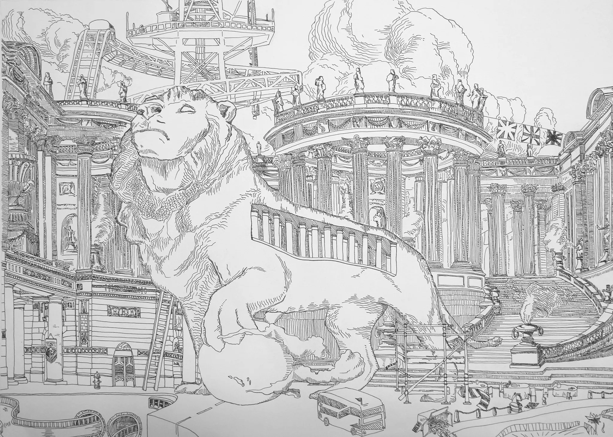
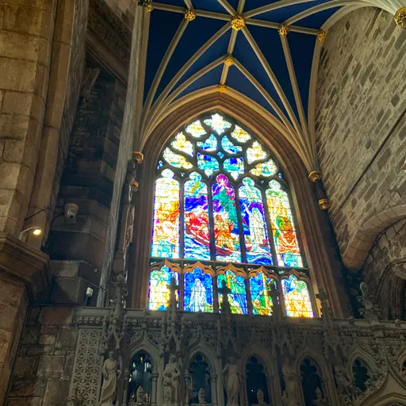
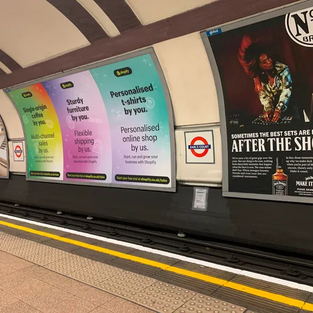
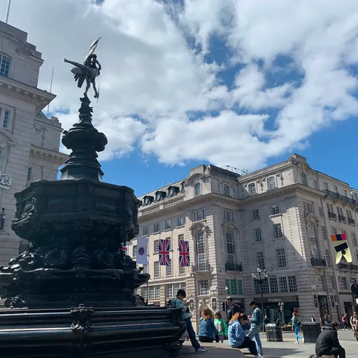
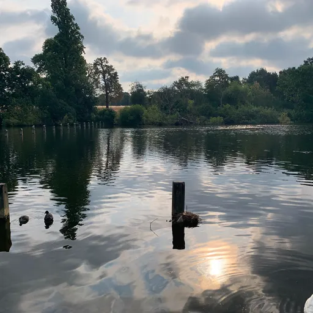
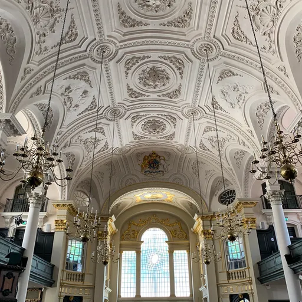
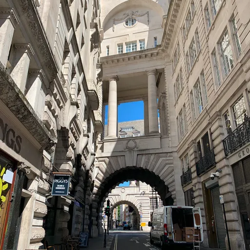
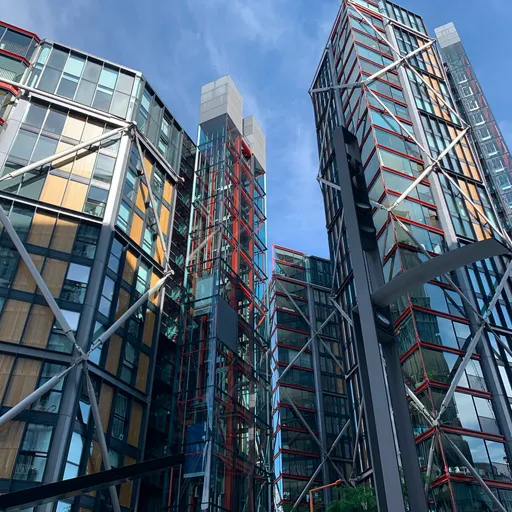
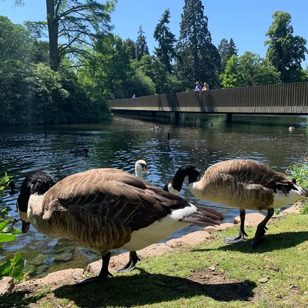
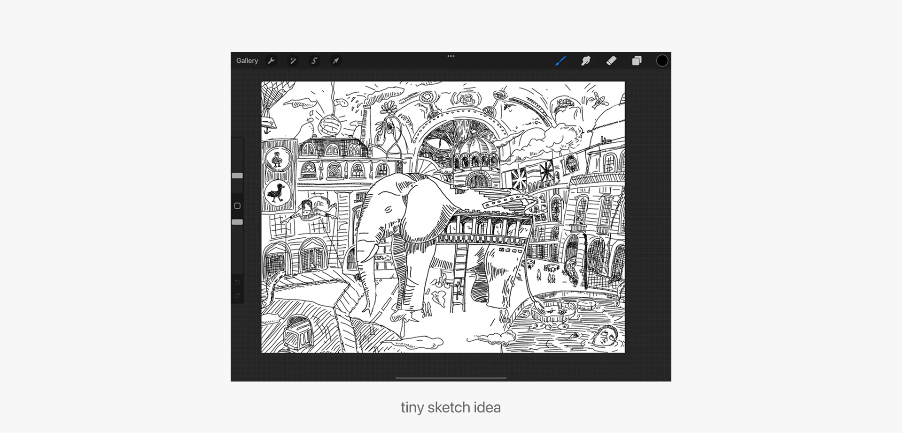

Overview
The Coronavirus severely cut off the connections between me and the outside world. When travel restrictions were lifted, my family took me to London for the first time.

Ink pen drawing on canvas paper, exploring personal perspective and the unique way each individual sees the world.
Artist
Designer
Photographer
Solo Project
Aug 2022
Ink Pen
Canvas Paper
Procreate
Overview
The Coronavirus severely cut off the connections between me and the outside world. When travel restrictions were lifted, my family took me to London for the first time.








Reflection
Fascinated, I created this direct observational piece to demonstrate the mesmerized and captivated emotions I felt during the trip.
